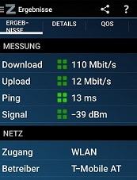

{kind=link}
2 hours ago, 41Kurt21 said:
Du hängst im Mobilnetz nicht am Kupferkabel oder?

gerade in der zib gehört dass wir uns darauf einstellen müssen dass das internet evtl nicht mehr lange funktionieren weil zu viele leute zu hause sind und gleichzeitig das internet nutzen.
was ist da dran?
Hey
@heman86
Die Netze werden wohl nicht komplett einbrechen, aber in Regionen mit mangelndem Festnetz bzw wo Personen vermehrt über mobile Netze online gehen, wird es wohl in der nächsten Zeit auch tagsüber enger werden, da auch nun mehr Personen am Tag zu Hause sind (und nicht nur am Abend), welche entweder von Zuhause aus Arbeiten sollen oder mehr Zeit für YouTube, NetFlix und co haben.
LG NTM
also du meinst kabel internet ist safe?
vor 5 Minuten schrieb heman86:also du meinst kabel internet ist safe?
Pauschal kann man so etwas halt nie zuverlässig sagen, da es auf viele Faktoren ankommt.
Kabel solle in der Regel stabiler sein als mobil (aber es gibt immer Ausnahmen).
Die bisherige Internet-Situation zwischen 19:00 & 21:00 Uhr, wird sich nun wohl auf den ganzen Tag (bis auf die Nacht) ausweiten.
Hallo zusammen, durch die aktuelle Situation ist die Steigerung der Nutzung, auch durch Home Office natürlich zu erwarten. Wir verzeichnen aber bereits ein jährliches Datenwachstum, weshalb wir jedes Jahr in den Ausbau unserer Netze und Standards investieren (wie 5G im Mobilfunk oder DOCSIS 3.1 im Kabelbereich). Je nach Saison ist die Nutzung in der Vergangenheit bereits sehr stark gestiegen und hat auch in dieser Zeit keine Kapazitätsengpässe verursacht. LG, Karo
Hat bisher irgendjemand schon etwas gespürt? Bei mir funktioniert noch immer alles tadellos ganzen Tag.
bei mir auch - keine Änderung spürbar, nicht die geringsten Einbußen bei den Speed-Werten (DL,UL,Ping)
(bei Internet 125)

Bearbeitet von hawkeyeIst ja Toll. Wir am Land hängen wohl alle am selben Mast. Seiten werden nicht mehr fehlerfrei aufgebaut. Nach F5 kommt alles langsam es ist zum kotzen. Hätte einen 150/30 Vertrag es gibt keine Störung lt. Magenta und was ist das siehe Messung >>>
danke
Bearbeitet von TOKUKAN2 hours ago, 41Kurt21 said:
Du hängst im Mobilnetz nicht am Kupferkabel oder?

@TOKUKAN nimm deinen Screenshot raus oder bearbeite diesen entsprechend. Deine Public-IP ist zu sehen.
... nicht antworten.
 .. den oberen beitrag bearbeiten!
.. den oberen beitrag bearbeiten!
/edit: ok wurde gemacht
Bearbeitet von biznizläuftIch hänge im bescheidenen LTE Netz. Lt. Magenta Karte sollten bei mir 250 Mbit/s möglich sein. Aber wenn hier über 100 Leute am Masten hängen bleibt für den einzellnen nicht viel über. Zum Zeitung lesen und Stöbern ist es genug. Aber zum Streamen von Amazon ist es einfach viel zu wenig was ich ab 15 Uhr an Mbit/s von Magenta bekomme. YouTube geht gerade auf der niedrigsten Auflösung.
RTR gibt grünes Licht
Heimische Provider dürfen Video-Streaming drosseln
7 minutes ago, 41Kurt21 said:RTR gibt grünes Licht
Heimische Provider dürfen Video-Streaming drosseln
Ist jetzt nicht so tragisch oder?

Bei meinen DL - Werten fällt das sowie aus.

12 minutes ago, 41Kurt21 said:Bei meinen DL - Werten fällt das sowie aus.

Das ist natürlich schon noch blöd
 Das stimmt
Das stimmt
Ja schon schlimm.
Auch bei mir mittlerweile größere Einbrüche aber daran müssen wir uns wohl noch eine Zeitlang gewöhnen, denn die Internetnutzung im MOment ist gewaltig. Da kommt einfach viel zu viel zusammen.

vor 30 Minuten schrieb Christian_E:Ja schon schlimm.
Auch bei mir mittlerweile größere Einbrüche aber daran müssen wir uns wohl noch eine Zeitlang gewöhnen, denn die Internetnutzung im MOment ist gewaltig. Da kommt einfach viel zu viel zusammen.
Wobei dies aktuell nur die Sender bzw. teilweise auch die Fiber Nodes betreffen dürfte.
Es ist halt einfach der Gleichzeitigkeitsfaktor aber das war ja auch zu erwarten.
Für die Provider wohl auch die nächste Herausforderung.
Home Offices wird es zukünftig immer mehr geben, auch die Online Methodiken bei Unis und in Schulen werden ausgebaut - also dürfte der Zuwachs eher hoch bleiben.
{kind=link}